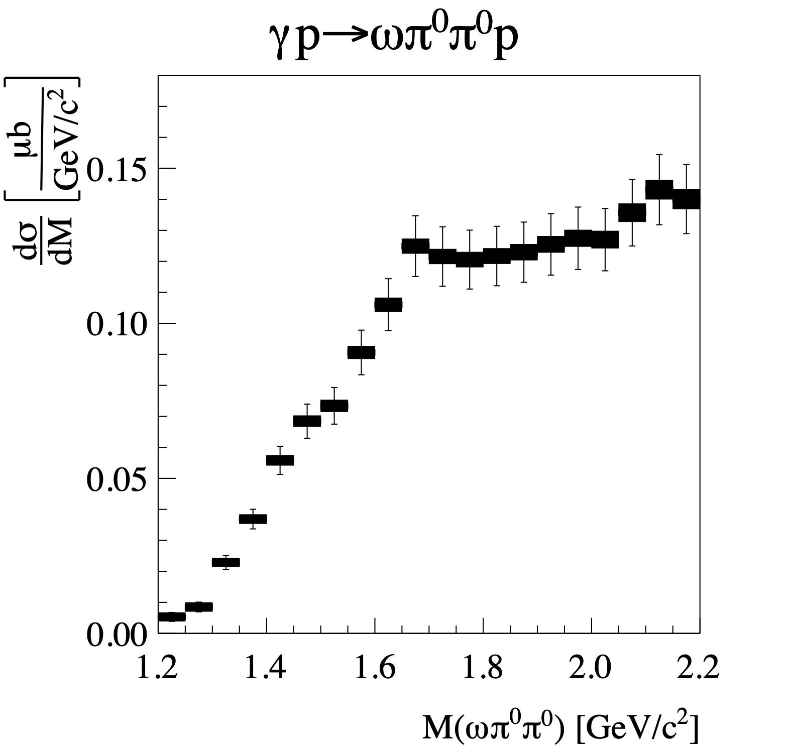
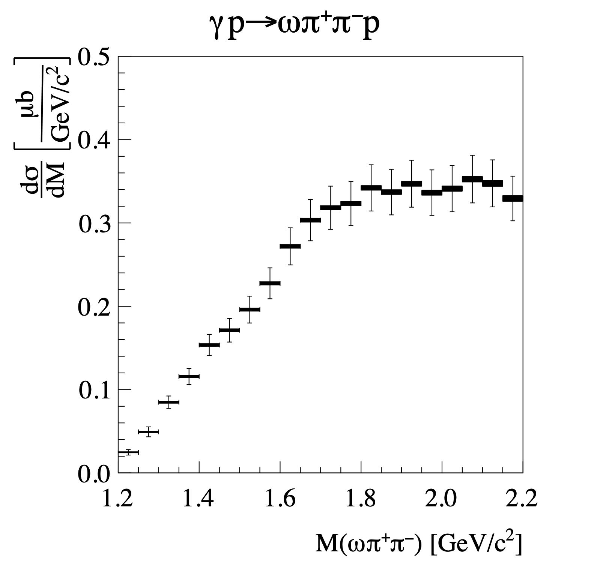
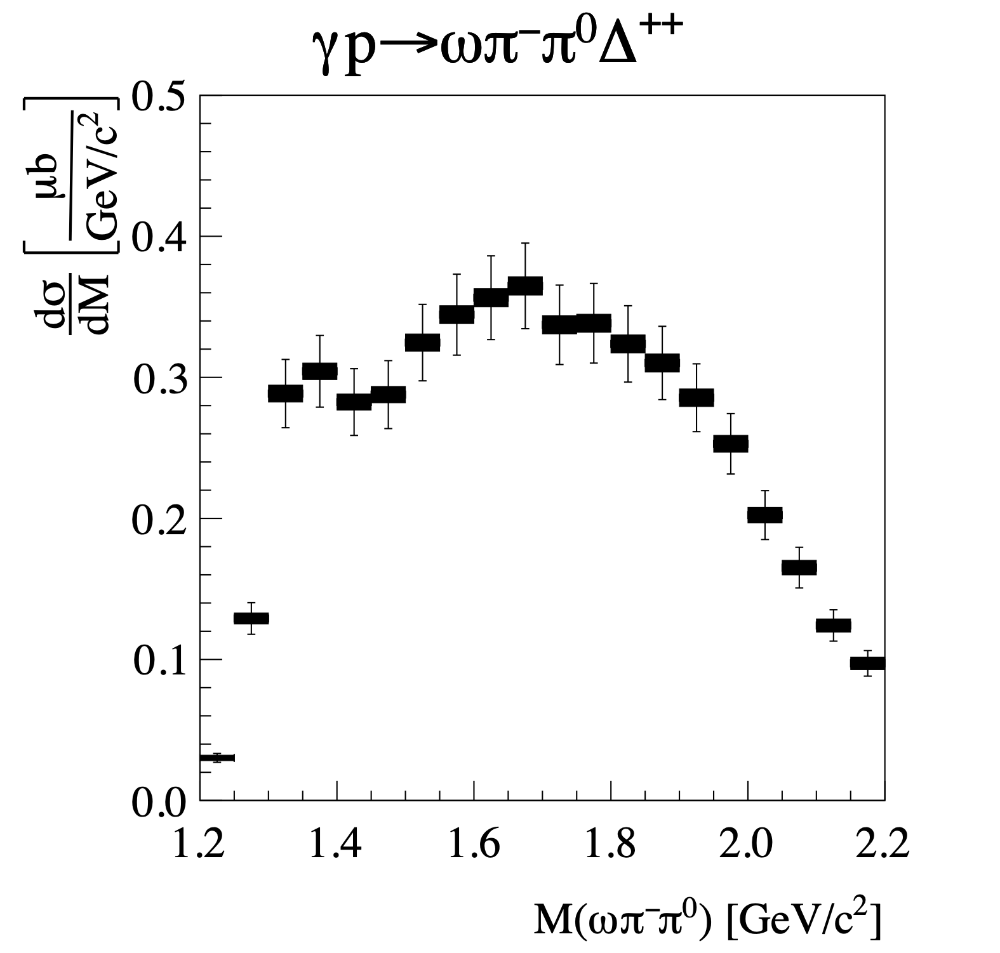
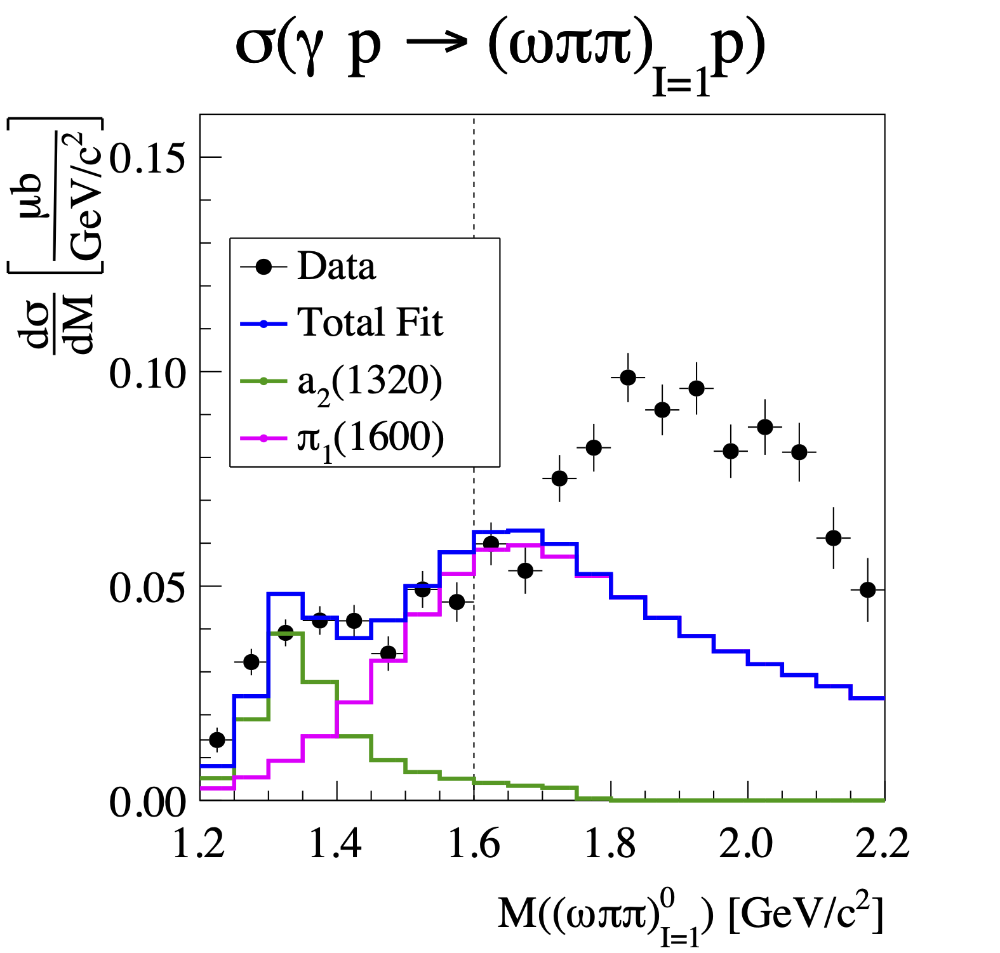
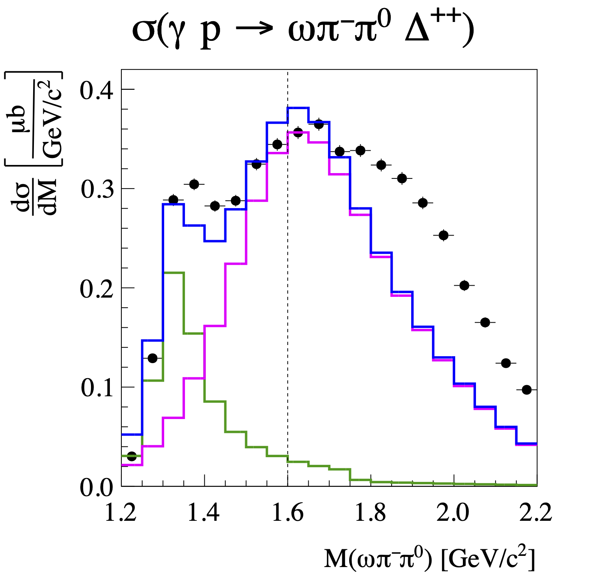
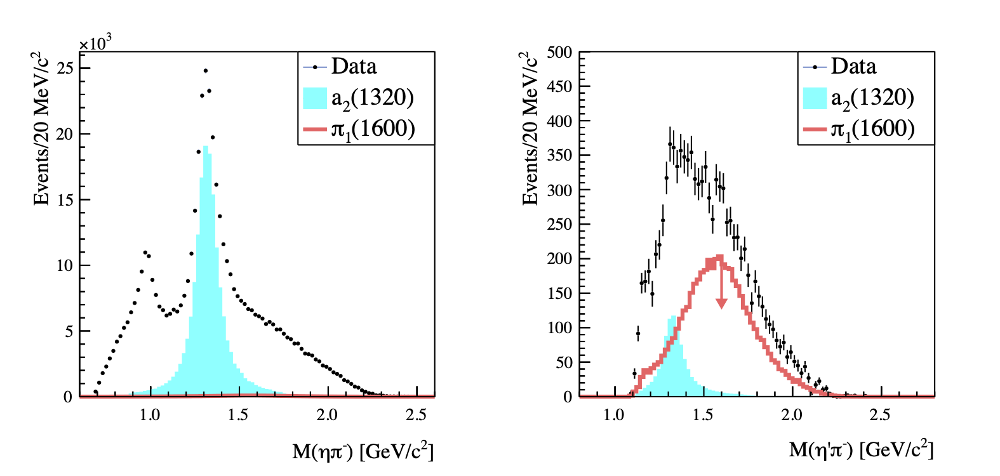

Upper Limit on the Photoproduction Cross Section of the Spin-Exotic $\pi_1(1600)$
Abstract:
The spin-exotic hybrid meson $\pi_{1}(1600)$ is predicted to have a large decay rate to the $\omega\pi\pi$ final state. Using 76.6 pb$^{-1}$ of data collected with the GlueX detector, we measure the cross sections for the reactions $\gamma p \to \omega \pi^+ \pi^- p$, $\gamma p \to \omega \pi^0 \pi^0 p$, and $\gamma p\to\omega\pi^-\pi^0\Delta^{++}$ in the range $E_\gamma = 8 - 10$ GeV. Using isospin conservation, we set the first upper limits on the photoproduction cross sections of the $\pi^{0}_{1}(1600)$ and $\pi^{-}_{1}(1600)$. We combine these limits with lattice calculations of decay widths and find that photoproduction of $\eta'\pi$ is the most sensitive two-body system to search for the $\pi_1(1600)$.Journal: Phys. Rev. Lett. 133 (2024) 26, 261903
arXiv: arXiv:2407.03316
HEPdata: link
|

Phys.Rev.Lett. 133 (2024) 26, 261903: downloads png pdf |
Figure 1a:
The differential cross sections for the reactions $\gamma p \to \omega \pi^0\pi^0 p$ with $0.1 (\text{GeV}/c)^2< -t < 0.5 (\text{GeV}/c)^2$ as a function of $\omega\pi\pi$ invariant mass. The filled rectangles show the statistical uncertainty, and the full error bars are statistical and systematic uncertainties added in quadrature. Not included in the error bars are uncertainties due to the photon and charged-track efficiency systematic uncertainty, as well as the systematic uncertainty due to the luminosity. These uncertainties are correlated for each source across the three measurements, so they cannot be easily visualized. |
|

Phys.Rev.Lett. 133 (2024) 26, 261903: downloads png pdf |
Figure 1b:
The differential cross sections for the reactions $\gamma p \to \omega \pi^+\pi^- p$ with $0.1 (\text{GeV}/c)^2< -t < 0.5 (\text{GeV}/c)^2$ as a function of $\omega\pi\pi$ invariant mass. The filled rectangles show the statistical uncertainty, and the full error bars are statistical and systematic uncertainties added in quadrature. Not included in the error bars are uncertainties due to the photon and charged-track efficiency systematic uncertainty, as well as the systematic uncertainty due to the luminosity. These uncertainties are correlated for each source across the three measurements, so they cannot be easily visualized. |
|

Phys.Rev.Lett. 133 (2024) 26, 261903: downloads png pdf |
Figure 1c:
The differential cross sections for the reactions $\gamma p \to \omega\pi^-\pi^0\Delta^{++}$ with $0.1 (\text{GeV}/c)^2< -t < 0.5 (\text{GeV}/c)^2$ as a function of $\omega\pi\pi$ invariant mass. The filled rectangles show the statistical uncertainty, and the full error bars are statistical and systematic uncertainties added in quadrature. Not included in the error bars are uncertainties due to the photon and charged-track efficiency systematic uncertainty, as well as the systematic uncertainty due to the luminosity. These uncertainties are correlated for each source across the three measurements, so they cannot be easily visualized. |
|

Phys.Rev.Lett. 133 (2024) 26, 261903: downloads png pdf |
Figure 2a:
The isospin-1 component of the cross sections for neutral $\omega\pi\pi$ for $0.1 (\text{GeV}/c)^2< -t < 0.5 (\text{GeV}/c)^{2}$. The error bars are statistical only. The cross sections are fit with an $a_2(1320)$ (green) and $\pi_1(1600)$ (magenta) Breit-Wigner shape in the range $M(\omega\pi\pi)<1.6$ GeV/$c^2$, indicated by the vertical dashed line. |
|

Phys.Rev.Lett. 133 (2024) 26, 261903: downloads png pdf |
Figure 2b:
The isospin-1 component of the cross sections for negatively charged $\omega\pi\pi$ for $0.1 (\text{GeV}/c)^2< -t < 0.5 (\text{GeV}/c)^{2}$. The error bars are statistical only. The cross sections are fit with an $a_2(1320)$ (green) and $\pi_1(1600)$ (magenta) Breit-Wigner shape in the range $M(\omega\pi\pi)<1.6$ GeV/$c^2$, indicated by the vertical dashed line. |
|

Phys.Rev.Lett. 133 (2024) 26, 261903: downloads png pdf |
Figure 3a:
The measured $\eta^{(\prime)}\pi^-$ invariant mass distributions (points), overlaid with the $a_2(1320)$ signal (cyan) and the $\pi_1(1600)$ upper-limit (red). |
{kind=link}
{kind=link}
{kind=link}
{kind=link}
{kind=link}
{kind=link}